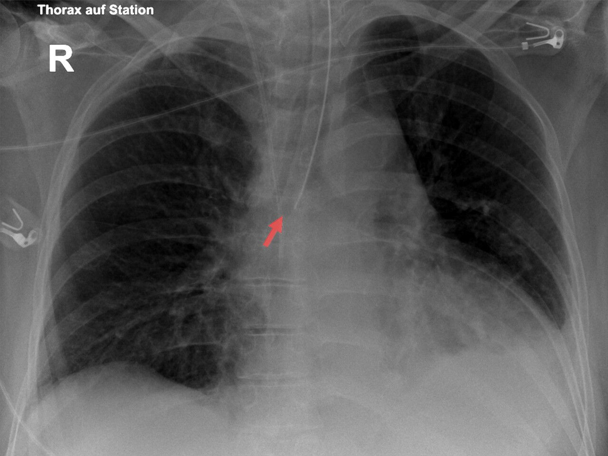

Ficha del catálogo
Dispositivos en la radiografía de tórax del paciente crítico
- Sistema
- Respiratorio
- Modalidad
- RX
- Región
- Tórax
- Dificultad
- Básico
La radiografía portátil de la unidad de cuidados intensivos sirve tanto para valorar el pulmón como para comprobar la posición de los dispositivos colocados al paciente. Revisarlos de forma sistemática permite detectar malposiciones que pueden causar daño inmediato. Se realiza en decúbito y con técnica anteroposterior, lo que modifica la apariencia del mediastino y de los derrames.
Técnica
Radiografía anteroposterior con equipo portátil, con el paciente lo más incorporado posible y en inspiración cuando se pueda coordinar con el ventilador.
Qué observar
- Extremo del tubo endotraqueal a unos cinco centímetros por encima de la carina con el cuello en posición neutra
- Punta del catéter venoso central en la vena cava superior, por encima de la aurícula derecha
- Sonda nasogástrica que recorre la línea media y cuya punta queda bajo el diafragma
- Tubo de drenaje pleural con todos sus orificios dentro de la cavidad torácica
- Cables de marcapasos y de desfibrilador sin acodaduras ni rupturas
- Neumotórax, enfisema subcutáneo o atelectasia tras cualquier maniobra reciente
Hallazgos
Dispositivos torácicos con sus extremos en la posición esperada, sin neumotórax ni colecciones nuevas.
Perlas
El tubo endotraqueal se mueve con el cuello, de modo que desciende con la flexión y asciende con la extensión. Una intubación selectiva del bronquio principal derecho provoca atelectasia del pulmón izquierdo y se corrige con solo retirar unos centímetros el tubo.
Diagnóstico diferencial
- Intubación esofágica
- Tubo desviado de la línea traqueal con distensión gástrica llamativa.
- Catéter en vena ácigos
- Trayecto que se curva hacia atrás en la proyección lateral.
- Sonda en la vía aérea
- Recorrido que se desvía hacia un bronquio en vez de seguir el esófago.
Simuladores
- Pliegues de sábanas y cables externos superpuestos
- Rotación del paciente que desplaza aparentemente los dispositivos
- Electrodos que se confunden con lesiones pulmonares
Por modalidad
- RX
- Método habitual de control en la cabecera del paciente
- TC
- Aclara posiciones dudosas y detecta complicaciones no visibles
Protocolo
Radiografía anteroposterior portátil con marcaje de lateralidad, revisada con una lista sistemática de todos los dispositivos antes de valorar el parénquima.
Clasificación
Errores frecuentes
- Informar el pulmón y olvidar comprobar los dispositivos
- No tener en cuenta la posición del cuello al juzgar el tubo endotraqueal
- Interpretar como cardiomegalia la silueta aumentada de una proyección anteroposterior en decúbito

paciente critico tubo endotraqueal cateter venoso central drenaje pleural radiografia portatil